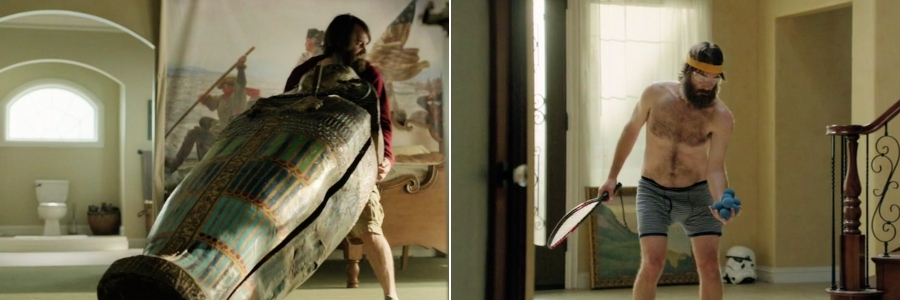
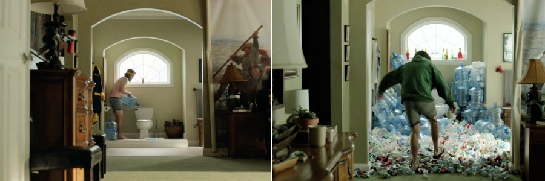

The Last Man on Earth is a post-apocalyptic comedy television series created by, and starring Will Forte as Phil Miller, who is the only survivor (or so he thinks) of the deadly virus outbreak.
This being comedy, the directors don't have to worry about 'banal' things like accuracy and consistency. Despite the fact that the series is set in a post-apocalyptic world of 2020, where the deadly virus wiped out 99.99999996% of the human race, there are no apparent after-effects of the prior apocalypse anywhere in sight, apart from the obvious absence of humans. There are no piles of rubbish and dead bodies littering the pavements, no long lines of abandoned vehicles on the roads, no traces of the aftermath of riots and looting that would inevitably accompany the breakdown of the society following the outbreak of the deadly disease, in fact, there are no signs of any recent epidemic anywhere to be seen whatsoever. Which is as well, because that gives the creators of the series a chance to fully focus on the question: what would happen if an average, middle aged, child-like man had the whole world and all its spoils only for himself?
No, seriously, what would you do, if you were the last man on Earth? Setting up an inflatable swimming pool full of liquor would be obviously a priority, but what next? Phil Miller knows precisely what:
First, move in to the best location and most luxurious house in the town. Nice house, sure, but it needs a tad of personalisation to make it just perfect, so some refurbishment is due: Out go the cheap reproductions hanging on the walls, in go the original paintings of the great masters 'borrowed' from the city art gallery. Out goes the tacky decoration from the dining room table, in goes the skull of Tyrannosaurus Rex, 'donated' by the local natural history museum.
Naturally, the collapse of the civilisation brings with it some minor inconveniences, such as a lack of running water – but then, who needs a flushing toilet when the whole swimming pool can be converted to a poo-pool?
And, of course, there is that trivial matter of being alone. But who needs friends, when the whole world is your playground? Ever wanted to play bowling in a car park with aquariums instead of bowling pins? Or, better still, with cars instead of both ball and pins? Now is your chance!
Ever desired to have your very own suit of armour? No problem! Ever yearned to own a tennis ball machine? Get it! And what about combining the two, as a plucky knight braving an attack by tennis balls fired from the tennis ball machine?
But why to stop there? Got some even more outlandish ideas? Ever wished for a shiny new flamethrower? Ever wanted to fire it at random objects? Ever wondered what would happen if you fired it at yourself while wearing an asbestos suit? Ever wanted to use it to burn some wigs on stands? (er, actually, me neither).
However, whatever fun it might have been, before long, Phil concedes that he is in denial. In an absence of companionship, even the best joke soon gets old and the greatest fun quickly wears off. The initial joy of absolute solitude and total freedom to do anything, without the fear of consequences, is gradually replaced by hopelessness and futility, and, bit-by-bit, the despondency sets in.

Eventually, Phil's despair gets to the stage when he starts to first contemplate, and then actually plan, his suicide. But just when everything is ready for his spectacular demise, Phil stops short of killing himself after he makes a remarkable discovery: He finds out that while he is still the last man on Earth, he is not the last human on the planet.
The 13-episode series, produced by 20th Century Fox Television, premiered on the TV network Fox in March 2015 and was renewed for a second season, returning in spring 2016.